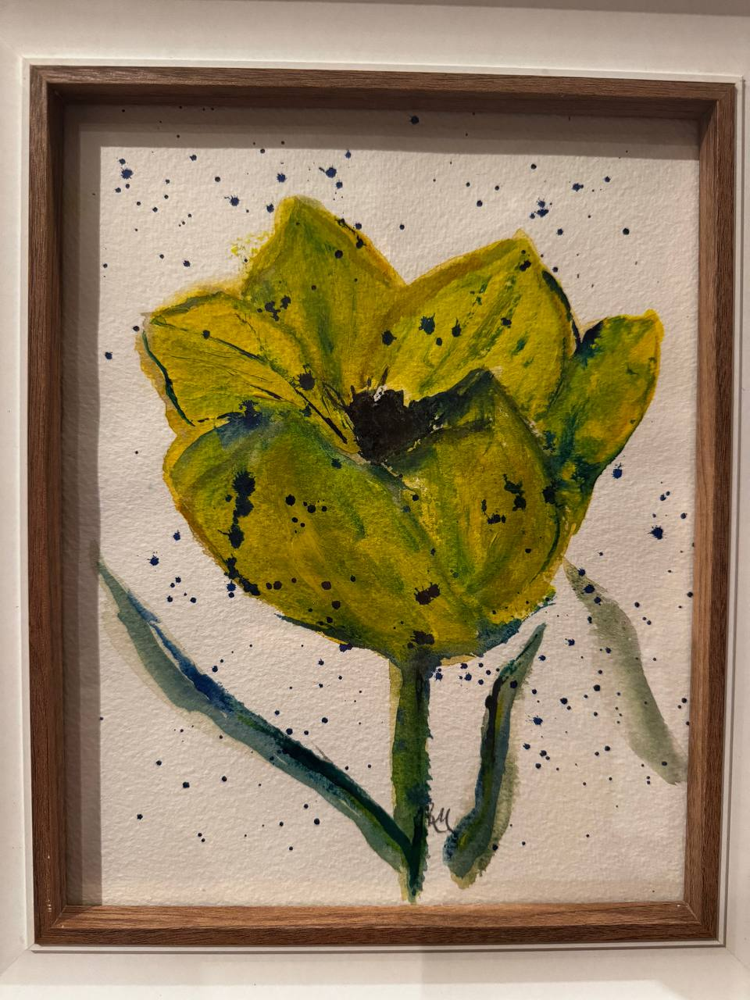

Floral studies · The Chilterns
Every flower
has a character.
Ros Morris paints flowers as individual subjects—observing their form, colour and quiet personality.
Explore the paintings
I like to feel that I can capture the essence and character of the flowers that I paint.
— Ros Morris
Selected work
Portraits from
the garden
Intimate observations of familiar flowers, each allowed its own mood and presence.
About Ros
Looking closely,
painting freely.
Based in the Chilterns, Ros draws inspiration from the changing flowers and gardens of the English countryside.
Her paintings move beyond botanical record. Through expressive colour, texture and line, she seeks the individual spirit of every bloom.
Enquiries
A painting can begin
with a conversation.
For commissions, available work and exhibition enquiries, please get in touch with Ros.
Contact details to be added before publication.